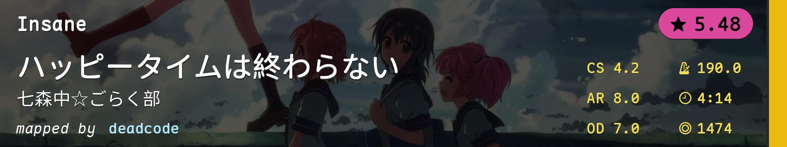
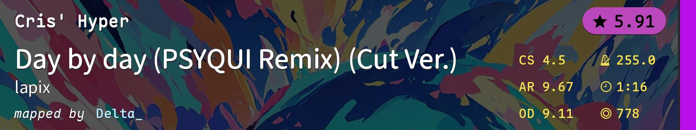
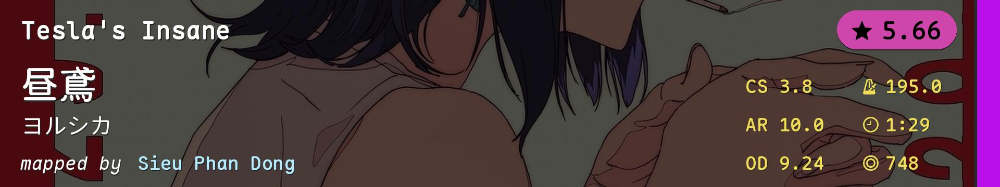

![Yamazaki Haruka, Tadokoro Azusa, Machico - Dreaming! (mx10001) [Hope]](./模拟图池（高阶）.covers/1-3923537.jpg)
![K A Z M A S A - Bon Appetit S (Oldskool HappyHardcore Remix) (Short Ver.) (BarkingMadDog) [blend s]](./模拟图池（高阶）.covers/2-2105741.jpg)
![HIMEHINA - Heart Pie Dancehall (Petal) [dkblaze's Expert]](./模拟图池（高阶）.covers/3-4444291.jpg)
![Laur - Vindication (Sunazuka Akira) [Extra (#5)]](./模拟图池（高阶）.covers/4-3226349.jpg)
![Gram - Nibelungen (xidorn) [lungaspeeding]](./模拟图池（高阶）.covers/5-3651733.jpg)
![mifumei - Yurame (KnightC0re) [chill's Expert]](./模拟图池（高阶）.covers/6-4111783.jpg)
![Shinkai Masayo - Contract Trigger (Lasse) [Revelation]](./模拟图池（高阶）.covers/7-4625968.jpg)
![PSYQUI - Hysteric Night Girl -Awakening- (feat. Such) (Luminiscental) [Extra]](./模拟图池（高阶）.covers/9-3698760.jpg)
![Kairiki bear feat. Hatsune Miku - Shippaisaku Shoujo (RLC) [captin's Extra]](./模拟图池（高阶）.covers/10-3905821.jpg)
![Katy Perry - California Gurls feat. Snoop Dogg (The Honeysticks) [Warm, Wet & Wild]](./模拟图池（高阶）.covers/11-3037074.jpg)
![lapix - Toumei Shin'en feat. nayuta (Tolyan) [Hiroto's Extra]](./模拟图池（高阶）.covers/12-4510406.jpg)
![Aimer - Stars in the rain (HowRengar) [Eternity]](./模拟图池（高阶）.covers/13-4190978.jpg)
![Maison book girl - snow irony_ (newton-) [deppy's insane_]](./模拟图池（高阶）.covers/16-2800663.jpg)
![Remo Prototype (CV: Hanamori Yumiri) - Sendan Life (Momochikun) [Collab Extra]](./模拟图池（高阶）.covers/17-990862.jpg)
![Rin - Koumakan set 10 B ~ Flowering Night (Xiila) [Ballet]](./模拟图池（高阶）.covers/18-3604159.jpg)
![succducc - me & u (-RealG) [secret]](./模拟图池（高阶）.covers/19-1964551.jpg)
![Rabbit House - Divine Ordeal (Garden) [Garden & yf's Ultimate Trial]](./模拟图池（高阶）.covers/20-3754619.jpg)
| # | BID | Beatmap Info | Mods | Notes |
|---|---|---|---|---|
| 1 | 3923537 | |
NM | 综合 |
| 2 | 2105741 | |
NM | 耐力串 |
| 3 | 4444291 | |
NM | alt |
| 4 | 3226349 | |
NM | tech |
| 5 | 3651733 | |
NM | 高速 |
| 6 | 4111783 | |
NM | 啥玩意？ |
| 7 | 4625968 | |
HD | Lasse又来HD1啦 |
| 8 | 1967172 |  | HD | AR8 堆叠+遮挡 |
| 9 | 3698760 | |
HD | 问就是闪灯推的歌太好听了 |
| 10 | 3905821 | |
HR | Miku又来HR1啦 |
| 11 | 3037074 | |
HR | 小圈 |
| 12 | 4510406 | |
HR | aim/手控 |
| 13 | 4190978 | |
DT | 偷偷在DT1塞一个aim应该没人发现吧 |
| 14 | 4257851 |  | DT | 切不死你 |
| 15 | 4787964 |  | DT | 控不死你 |
| 16 | 2800663 | |
DT(speed_change=1.35); DA(approach_rate=8.5) | DT gimmick |
| 17 | 990862 | |
FM | 听说现在FM1流行高速 |
| 18 | 3604159 | |
FM | antimod |
| 19 | 1964551 | |
FM | 终于能塞进这张好玩的图了 |
| 20 | 3754619 | |
TB | 搞点真题玩玩（Corsace Open 2022 RO32） |